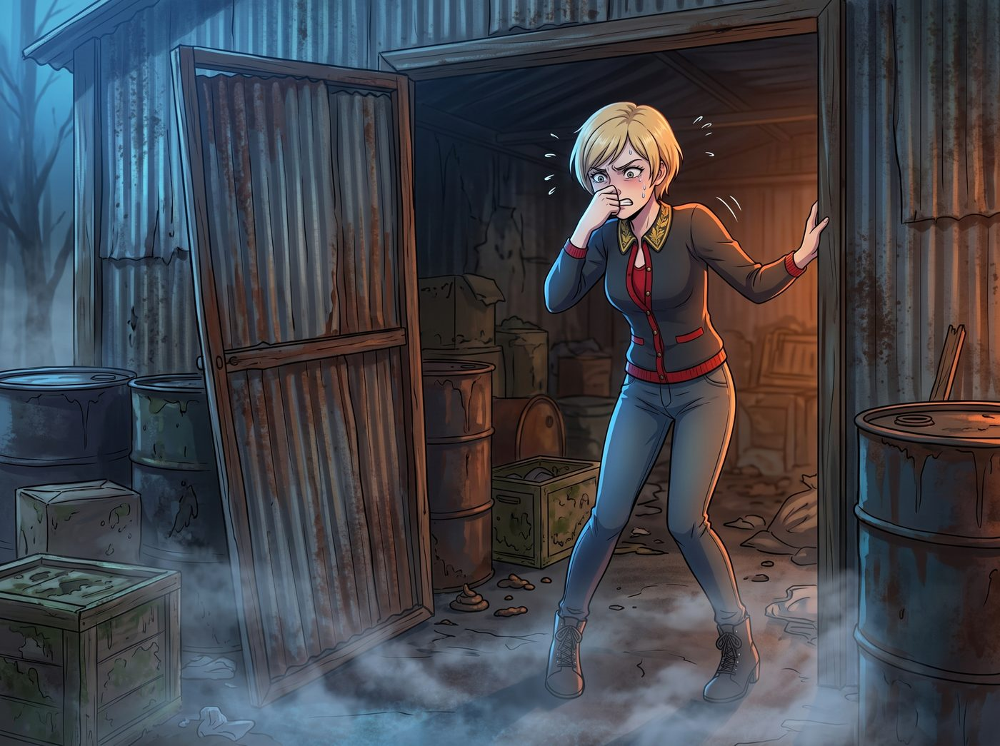
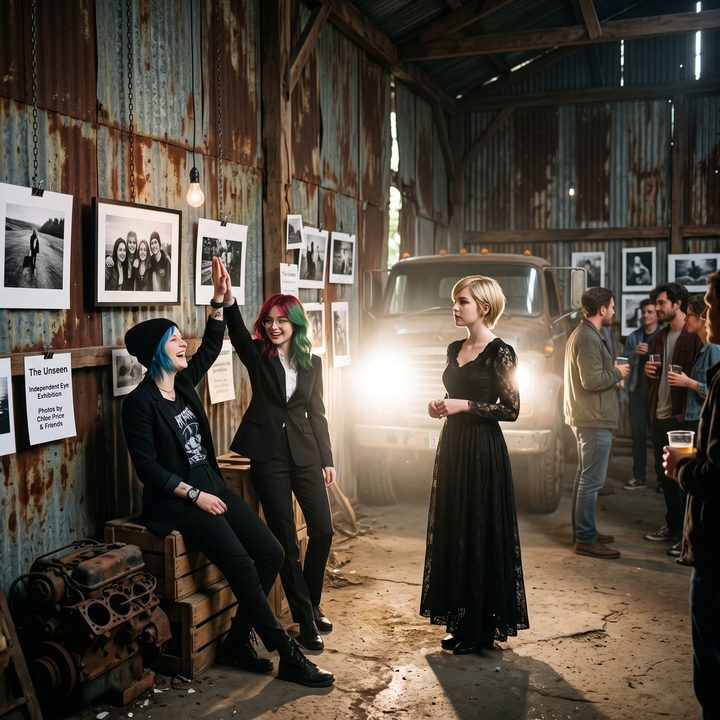
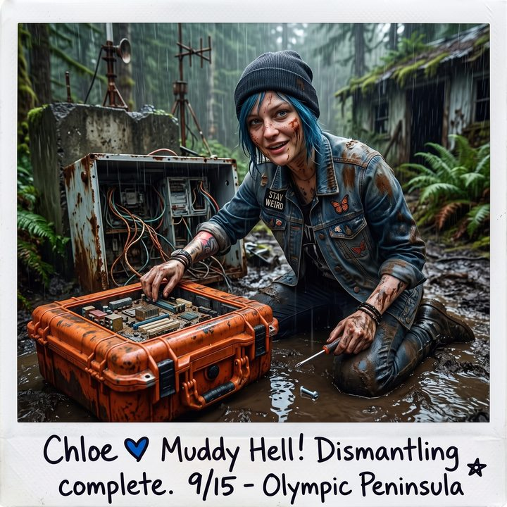

崩塌與重構





「零預算地下游擊展」的口號喊出來的時候確實很熱血。
但十二個小時後，當 Victoria 真正站在營地邊緣那座廢棄林區倉庫門口時，她骨子裡的老錢 DNA 發出了瘋狂的排異反應。
清晨的冷風吹過，倉庫那扇搖搖欲墜的鐵皮大門發出令人牙酸的嘎吱聲。
一、破傷風誘發裝置
「我們不能在這裡辦展。」Victoria 捂著鼻子，驚恐地後退了兩步。倉庫裡那股混合著機油、霉味和野生浣熊排泄物的氣味，瞬間擊碎了她昨天的豪言壯語，「這裡面全是青苔和蜘蛛網！那根生鏽的承重柱看起來隨時會倒塌！這根本不是什麼地下龐克，這是一個巨大的破傷風誘發裝置！如果我邀請藝術圈的人來這裡，他們會以為我要綁架他們！」
「這叫粗獷主義，大小姐。」Chloe 扛著一大捆鋼纜從皮卡上跳下來，滿不在乎地說，「現在的藝術圈不就喜歡這種調調嗎？越破越顯得妳有思想。」
「破和有思想之間是有界線的！」Victoria 崩潰地指著角落裡一攤積水，「真正的粗獷主義是經過精密計算的清水模建築！而這個？這個叫廢品收購站！」
二、先讓它不會塌
「兩位學姐，請先暫停關於美學的爭論。」
Lily 不知道從哪裡掏出了一個黃色的工具包，拉開拉鍊，裡面整整齊齊地排著一台超音波測厚儀、一支雷射測距儀、一個水平儀，還有一捲貼滿編號標籤的膠帶。
「妳……妳出門隨身帶這些東西？」Max 目瞪口呆。
「辦展之前，當然要先做場勘。」Lily 理所當然地說。
她走到那根鏽跡斑斑的承重柱前，把測厚儀的探頭貼在柱腳，看了一眼螢幕上的數字，眉頭微微皺起。接著她又量了屋頂幾片鐵皮的間距，用雷射對著橫樑打了一條線，拿水平儀比了比。
「結論：Victoria 學姐的直覺是對的。」Lily 轉過身，「這根柱子底座的鋼材壁厚，已經鏽蝕到只剩原本的三成左右，承重有明顯風險。屋頂東側有六片鐵皮的固定件已經鬆脫，風大一點就可能掉下來。橫樑本身還算健康。在做任何佈置之前，這兩處必須先加固。」
她在柱子和那幾片鐵皮的位置上，分別貼上了紅色的編號膠帶。
Chloe 抱著手臂，一臉嫌棄地看著那幾條紅膠帶：「喂喂喂，實習生，妳這樣搞，整個地方就一點都不危險了。一個地下游擊展，結果安全得跟幼稚園一樣？這一點都不龐克！」
「如果客人被掉下來的鐵皮砸到頭，」Lily 平靜地說，「那就不是龐克，是過失傷害。」
Chloe 張了張嘴，找不到反駁的話。
「……切。」她翻了個白眼，轉身走回皮卡，一邊嘟囔著「無聊的合規社會」，一邊從車斗裡拖下一台焊機和幾根舊鋼樑。
那一整天，Chloe 都泡在倉庫裡。她嘴上一直罵罵咧咧，說這是她做過最不龐克的一件事，手上卻一點都沒偷懶：在柱腳焊了一圈加固鋼套，用兩根從廢車場拖來的鋼樑做了斜撐，又爬上屋頂把那六片鐵皮一片一片拆下來重新釘死。每做完一處，她就把對應的紅膠帶撕下來，揉成一團扔給 Lily。Max 在下面扶梯子，Kate 送了三趟熱咖啡。
傍晚，Lily 拿著一份她自己擬的檢查清單，繞著倉庫一項一項地確認：承重結構、屋頂固定、地面積水、電線走向、逃生出口。她在最後一欄打了個勾，才抬起頭。
「結構安全已確認。」她推了推眼鏡，「現在，我們可以開始討論怎麼讓它看起來危險了。」
三、生死狀
Lily 遞給 Victoria 一份列印好的文件，標題是：《極端空間沉浸式藝術體驗風險認知聲明書》。
「這是什麼？」Victoria 愣住了。
「這是一場表演，學姐。」Lily 指著文件上的條款，「倉庫現在很安全，但客人不需要知道它有多安全。我們在邀請函上寫明：本展位於未經商業化改造的工業遺址，入場前須簽署風險聲明，主辦方不對任何掉落的鐵鏽負責。」
她頓了頓，露出一個乖巧的微笑：「那些人早就厭倦了安全、無聊的白盒子畫廊。當他們必須先簽一份生死狀才能看您的展覽時，這就不叫寒酸了。這叫門檻。」
Victoria 看著手裡那份荒謬卻極度專業的聲明書，瞳孔微微放大。用一份生死狀，把一個加固過的破倉庫包裝成需要膽量才能進入的聖地——這種顛倒黑白的心理學，精準地擊中了她那顆深諳上流社會虛榮心的大腦。
「好。」她嚥了一口唾沫，強行壓下對蜘蛛的恐懼，「但內部怎麼辦？總不能讓他們摸著黑看爛木頭吧？」
四、報廢車燈
接下來的兩天，二號車廂的五個人展現出了驚人的協作。
沒錢租畫廊軌道燈？Chloe 去廢車場拆了八對報廢皮卡的鹵素大燈，用鋼纜把它們懸掛在倉庫斑駁的鋼樑上，接上營地的柴油發電機。
當發電機轟鳴、大燈亮起的那一瞬間，奇蹟發生了。
那些刺眼的、帶著工業粗糙感的強光，像利劍一樣劈開了倉庫的黑暗，精準地打在一張張用鋼絲吊在半空中的寶麗來照片上。照片裡那些關於封城、掙扎與二號車廂日常的細膩影像——泥坑裡的馬丁靴、化學加熱袋煮出來的軍糧肉醬、戴著綠色大耳機吃晚餐的四個人——在刺眼的強光和四周漆黑的廢墟襯托下，爆發出了一種令人窒息的張力。
而 Victoria 與生俱來的策展直覺，也在這一刻被徹底激發了。
她不再嫌棄那些青苔和鐵鏽。她指揮 Kate 去森林裡採集野生蕨類和枯枝，以一種極具侘寂美學的方式，佈置在生鏽的齒輪和斑駁的磚牆邊緣。
「把那盞燈往左偏兩度！我要讓光線正好擦過那道裂縫！」Victoria 踩著一雙沾滿泥巴的名牌短靴，在廢墟裡大聲指揮，「這張照片不能貼在牆上！把它吊在半空中！我要讓它看起來像是在這座金屬墳墓裡漂浮的靈魂！」
而在倉庫的正中央，一道單獨的車燈從正上方垂直打下，照亮了一個放在生鏽油桶上的東西：Chloe 用鈦合金和防彈玻璃焊出來的那個相機鐵殼。旁邊的小卡片上，Victoria 親手寫著：「非賣品。」
五、全西雅圖通風最好的展廳
三天後，夜幕降臨。
十幾位西雅圖藝術圈的評論家、收藏家，以及 Victoria 的父親 Richard Chase，穿著昂貴的西裝和晚禮服，戴著口罩，踩著泥濘的林間小路，一臉震驚地來到了這座廢棄倉庫前。
Lily 穿著黑色套裝，站在門口，優雅地遞上夾板：「晚上好，各位貴賓。進入這場名為《崩塌與重構》的展覽前，請務必簽署風險認知聲明。內部嚴禁使用閃光燈，並請注意頭頂的工業結構。另外，根據目前的防疫規定，本場限量十五人，全程配戴口罩。」
她頓了頓，補了一句：「不過請放心，由於屋頂和牆面的特殊設計，這裡大概是目前全西雅圖通風最好的展廳。」
那些平時在五星級酒店裡頤指氣使的人，被這種陣仗徹底鎮住了。他們小心翼翼地簽下名字，懷著一種朝聖般的忐忑，走進了倉庫。
「轟——嗡——」柴油發電機發出低沉的脈衝聲。
黑暗中，八道強光從天而降，照亮了半空中那些小巧、脆弱卻充滿生命力的寶麗來。
極致的粗糙與極致的細膩。死去的工業廢墟與鮮活的瞬間記憶。
沒有人敢說這是一個破傷風搭棚。一位評論家站在那個相機鐵殼前看了很久，低聲對同伴說了一句「這是對這個時代最誠實的東西」。
Victoria 穿著一襲黑色復古長裙，站在光影的交界處，手裡端著一杯用紙杯裝的廉價氣泡水。整場展覽，連同燈、鋼材、發電機的柴油和印邀請函的紙，一共花了不到兩千美元。
六、燈光打得不錯
展覽快結束時，Richard Chase 在門口停下了腳步。
他整晚沒說幾句話，只是一張一張地看過那些照片，在那個相機鐵殼前站了一會兒，在一張四個人戴著綠色大耳機吃晚餐的照片前，嘴角似乎動了一下。
Victoria 走過去，心臟跳得比第一次跟他談判時還快。
Richard 看了看倉庫的屋頂，看了看那些吊在鋼樑上的報廢車燈，又看了看自己女兒那雙沾滿泥巴的靴子。
「燈光打得不錯。」他說。
然後他點了點頭，轉身走進了夜色裡。
Victoria 站在原地，很久沒有動。Chloe 走過來，用肩膀撞了她一下：「喂，妳爸剛才那句，算是誇妳嗎？」
「在我們家，」Victoria 低頭看著手裡的紙杯，聲音有點啞，「那已經是最高規格的讚美了。」
Max 躲在發電機後面的陰影裡，舉起寶麗來。鏡頭裡，是斑駁的鐵皮、刺眼的車燈、站在光影交界處的 Victoria，以及在角落裡擊掌的 Chloe 和 Lily。
「喀嚓。」
Max 用帶著油污的手指，在照片背面寫下：
『規則第七十條：當老錢的品味遇上藍領的電焊，再加上一份合規的生死狀，破倉庫也能變成聖地。但前提是，先讓它不會塌。』